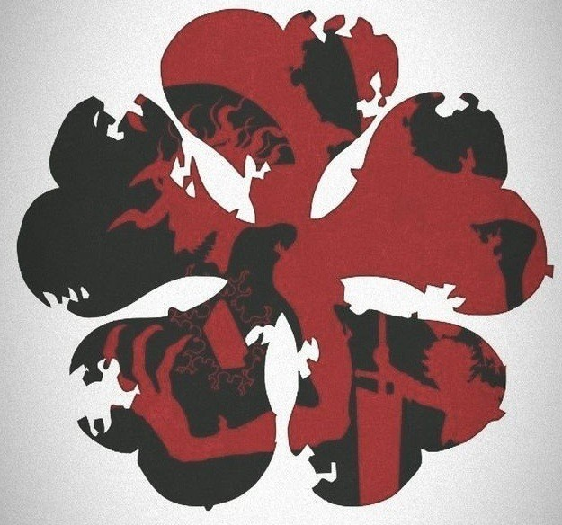
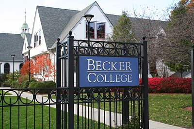

Andrew Hill - Bio
Bio
My name is Andrew Hill, I am from Killingworth, Connecticut. I was born in New Haven and lived in Branford for a few years before moving there. Killingworth is a very small town, so I went to a joint school with two other surrounding towns, although we didn't merge together until 5th grade. I tried out different sports for a few years and eventually fell in love with lacrosse, which I played from 4th grade until junior year. I would have played senior year too but this weird virus meant we couldn't. I shifted around to different positions before becoming a goalie in 8th grade. Outside of school and lacrosse I took up drumming, initially it was as part of the school band but eventually I started to branch out and play more stuff I enjoyed. Although I couldn't bring it to college I usually play metal, rock, and pop rock, along with the occasional anime opening or even jazz. I was originally going to a college in Worchester, Massachusettes called Becker, which unfortuinately closed due to financial issues, which is why I came to NEIT. The decision to come here was relatively easy, as this was my second choice behind Becker, and now that I'm here I wish I came here to begin with. Everything here seems to fit who I am much better than Becker did, the accelarated program, the campus and the dorms especially. I'm glad I'm here now and look forward to what is to come.
Schooling
- Haddam-Killingworth High School
- Becker College
- New England Institute of Technology
Hobbies
- Video Games
- Drumming
- Anime